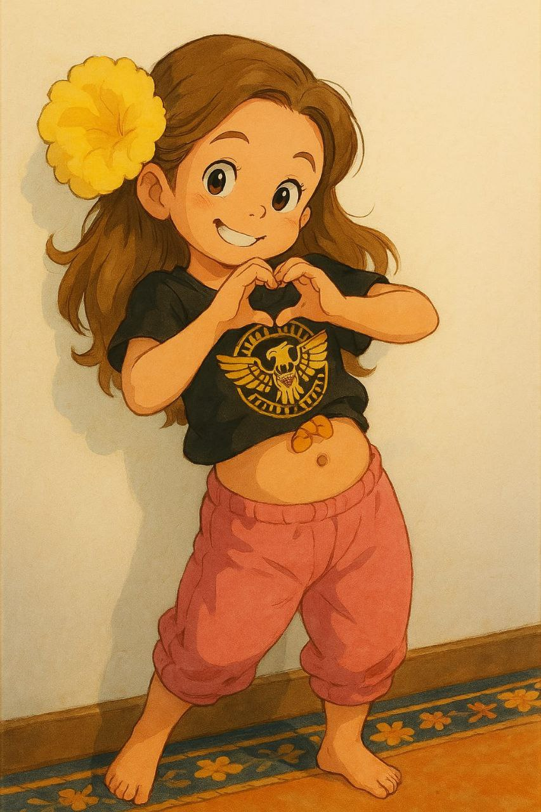
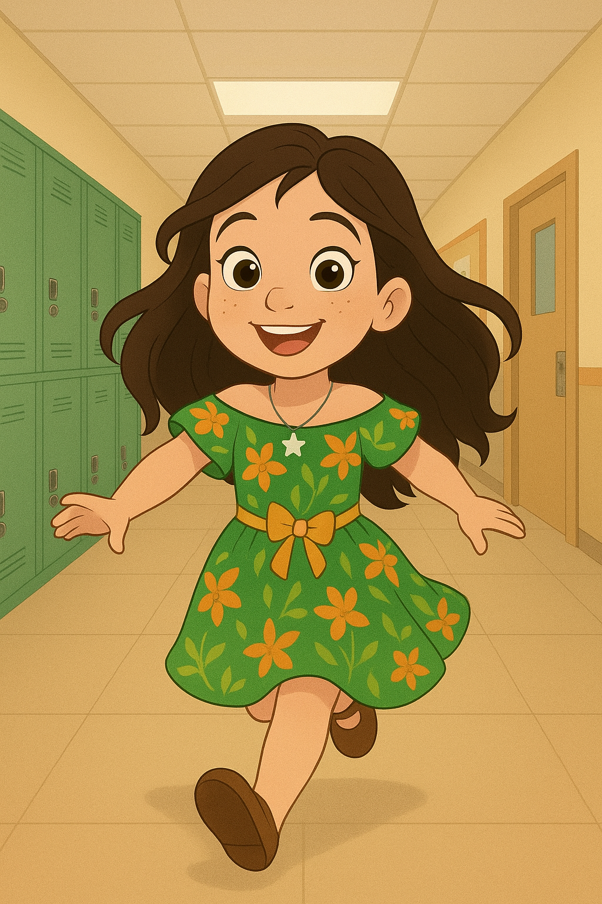
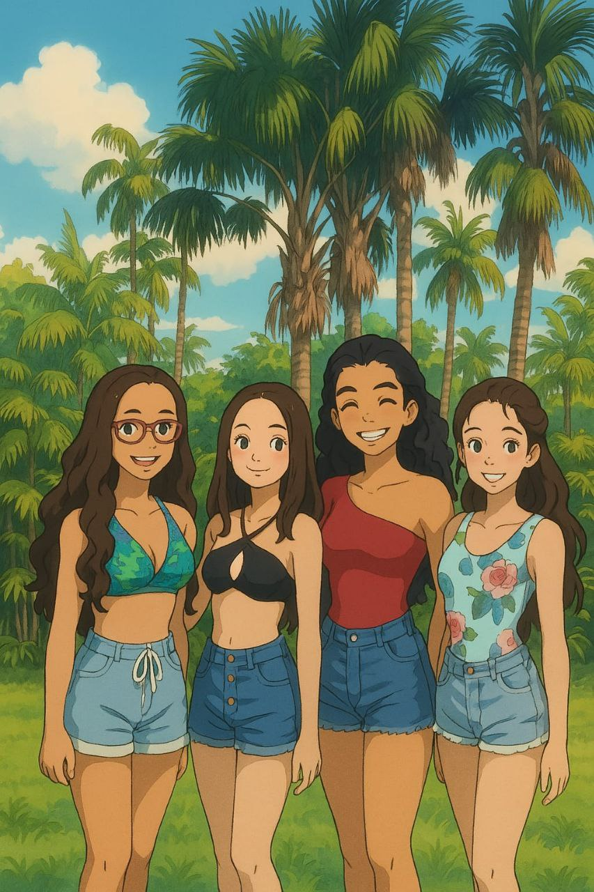
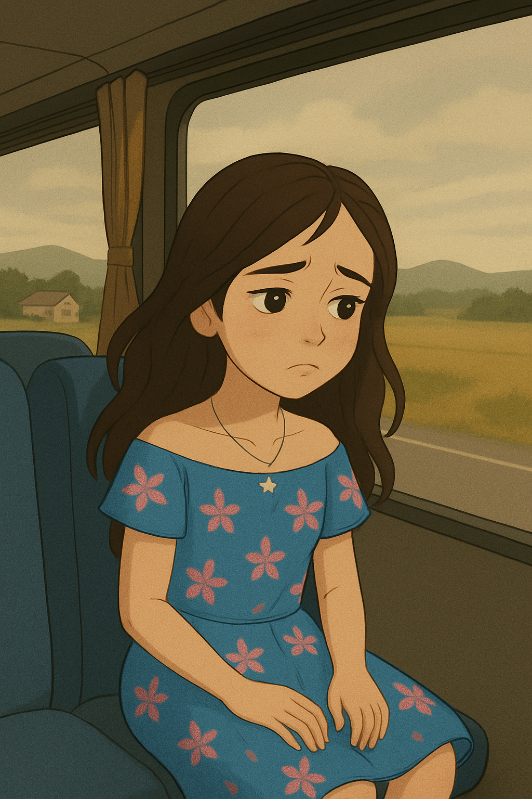
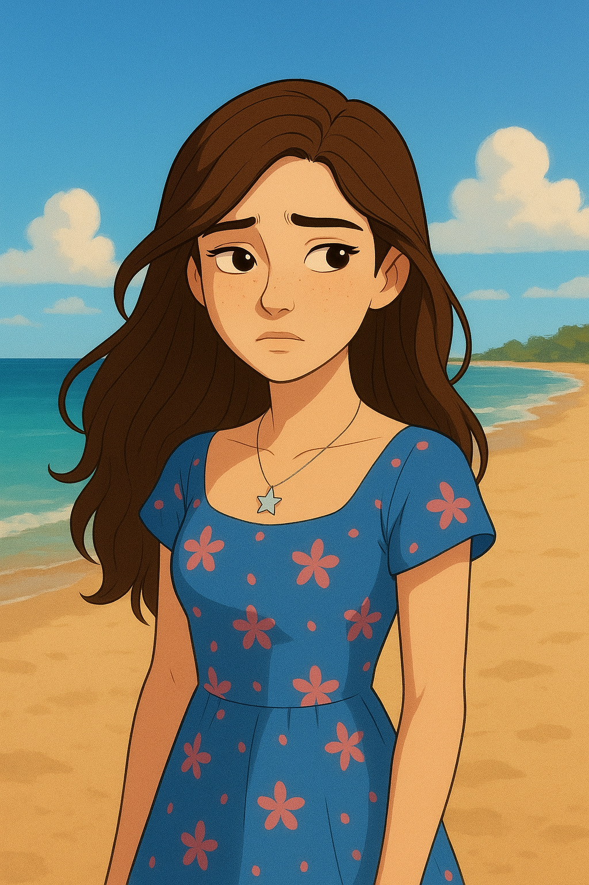
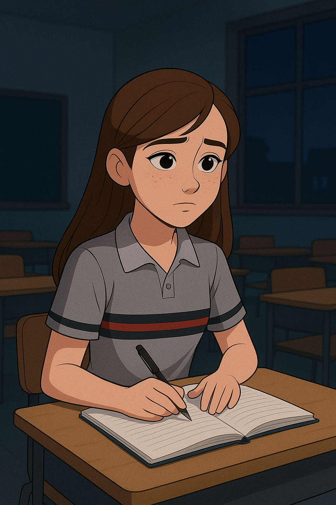
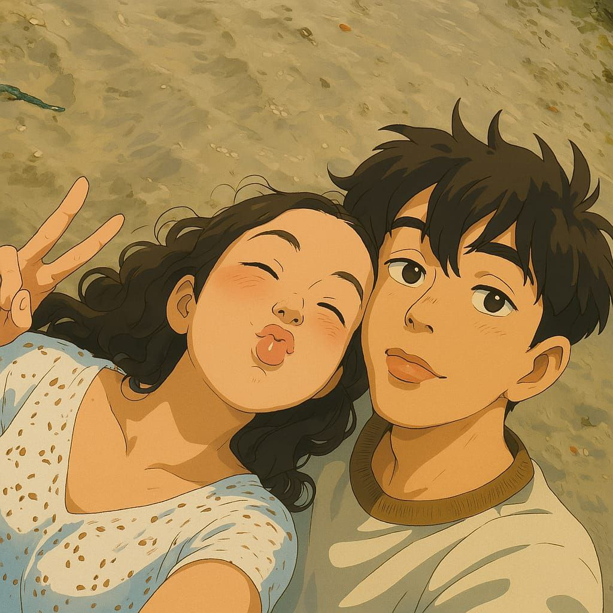
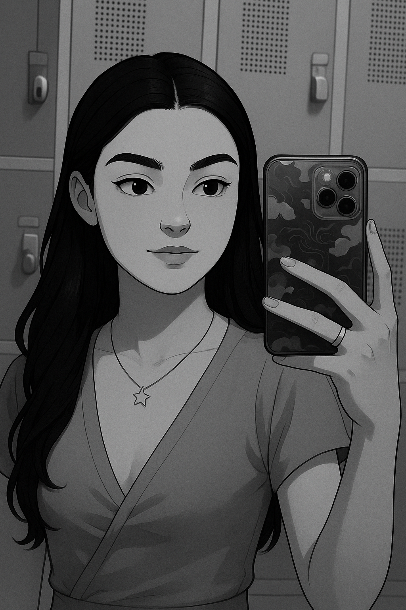

Era uma vez...
numa pequena cidade do nordeste brasileiro, uma garotinha bem pequenininha chamada Marina.
Marina era uma garota muito alegre, fofa, sorridente e encantadora... Vivia perambolando com seus amigos, ia a escola, brincava, corria...
Com o passar dos anos, Marina foi crescendo e conhecendo novas pessoas, sempre com suas amigas estando ao seu lado.
Quando mais velha, seus pais decidiram se mudar para outro estado, mesmo com Marina não gostando da ideia nem um pouco.
Chegando em Bertioga, uma pequena cidade situada no litoral de São Paulo, Marina começa uma vida diferente, tendo que conhecer pessoas, fazer novas amizades e lidar com a saudade de casa e de sua avó...
Após anos morando em Bertioga, Marina está com sua vida mais estabelecida na cidade, terminando o Ensino Médio e pensando o que ser no futuro.
Quando Marina tinha seus 16 anos, acaba conhecendo um garoto chamado João, garoto esse que ela não fazia ideia do que seria dela num futuro próximo.
No ano seguinte Marina realizou um de seus objetivos de vida, se formou no Ensino Médio. Talvez de um jeito que ela nunca imaginaria no passado, porém do jeito que Deus quis que ela se formasse.
Hoje Marina está completando 19 anos, está cursando enfermagem, e sendo feliz ao lado de sua familia e daquele garoto que ela conheceu no 2° ano do Ensino Médio. Está tendo uma vida que ela nunca imaginaria ter antes, que ela nunca planejou antes. Continua orgulhando sua familia e seu namorado em tudo o que faz, segue melhorando, evoluindo, aprendendo e amadurecendo.
Minha querida,
Hoje é um dia muito especial, é o dia que a minha garota fica 1 aninho mais velha. Quero que saiba que eu tenho muito orgulho de ti, da pessoa que é, que se tornou. Te desejo tudo de bom desse mundo, muitos mais anos de vida, muita felicidade e alegria. Que nesse ano esteja mais póxima de realizar seus melhores sonhos e conquistar seus objetivos. Vou estar sempre ao seu lado minha princesa, sempre te apoiando e torcendo por ti.
Parabéns minha amada, que Deus te abençoe, te guarde, te proteja e te ilumine para todo o sempre, Amém.
Você é a minha princesa, a